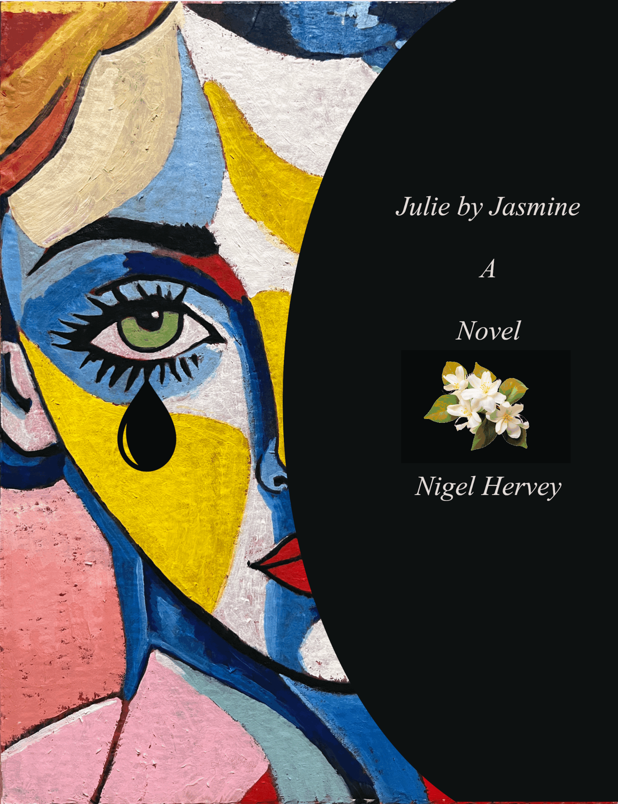
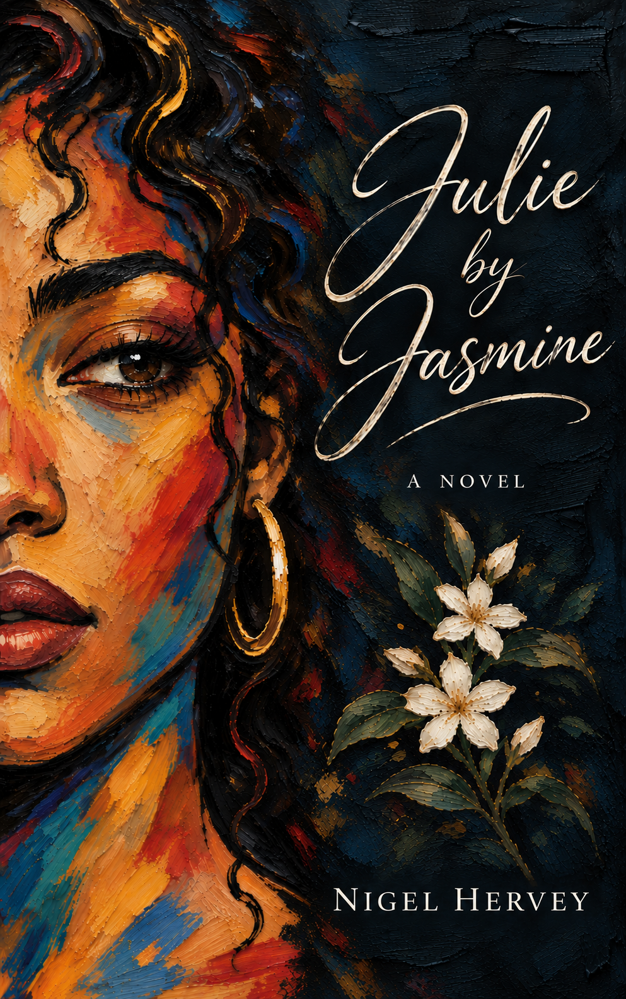
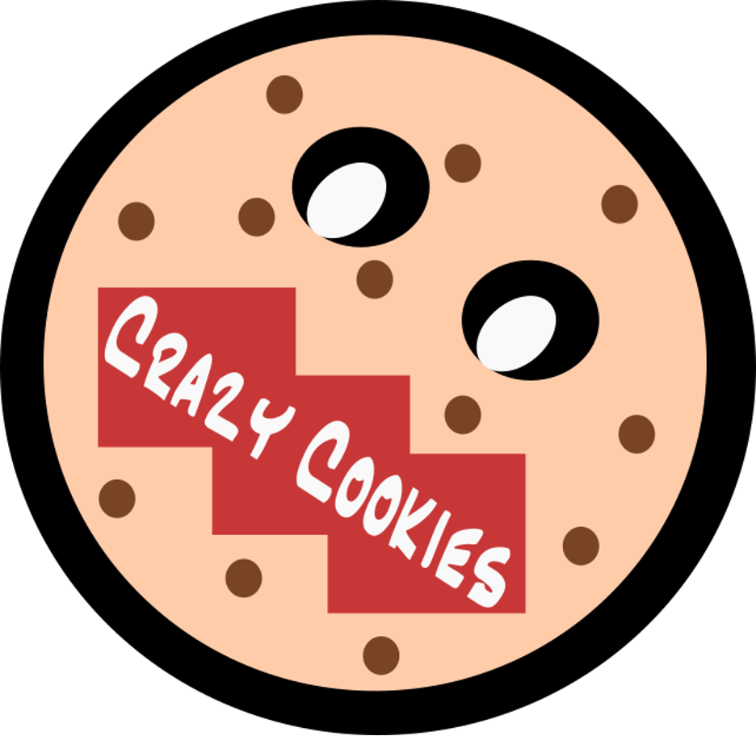

01 / IMAGE EDITING
Image Editing
Experiments in digital imagery, composition, and visual design.
01 / GALLERY
Selected Images
A collection of digital image projects exploring composition, typography, and visual communication.



PROJECT OVERVIEW
Process & Reflection.
For this project, I was tasked with creating a logo and developing a book cover using both traditional and AI-assisted image editing tools. Using Inkscape, I created a logo for a pseudo cookie company called Crazy Cookies. I experimented with layering geometric shapes, using analogous colors, and contrasting rounded shapes with angular shapes to give the logo a playful appearance.
I developed a traditional book cover for a fictional novel titled Julie by Jasmine using GIMP. I experimented with image layering, selection tools, typography, contrast, and negative space. I then used DALL-E 3 to develop an AI-generated version of the book cover, refining the colors, blending, typography, and emotional expression through several iterations.
I found the traditional approach to be slower and more manual, whereas AI allowed me to focus more on what I could picture in my mind. However, I also found that traditional tools encouraged me to think outside the box, while AI sometimes narrowed my thinking to the images it presented. Overall, this project allowed me to begin developing my skills in Inkscape and GIMP while exploring how AI can serve as a support tool in the creative process.